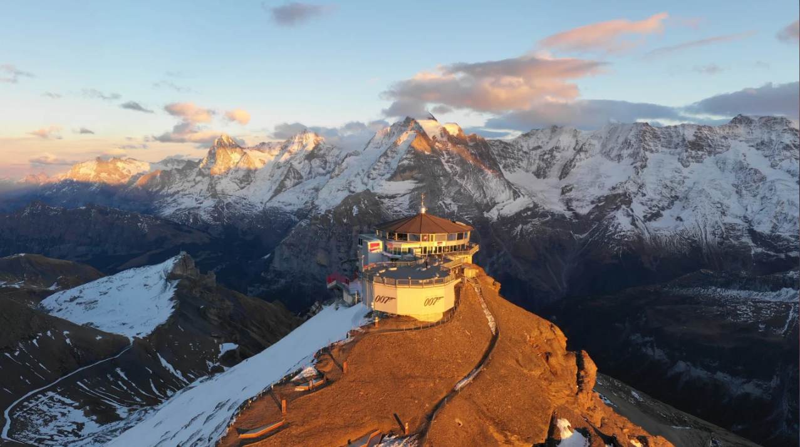

< 인터라켄 >
인터라켄은 베르네제 오버란트 지역의 툰 호수와 브리엔츠 호수 사이 비옥한 평원에 위치해 있다.
이 휴양지는 아이거, 묀히, 융프라우 세 개의 웅장한 봉우리가 기막힌 절경을 선사하며, 수 많은 액티비티를 즐기기 위한 출발지로 인기이다.
여름이면 융프라우 지역의 그린델발트나 라우터브룬넨으로 향하는 기차를 타고 이동하여 해당 지역을 즐길 수 있다.
인터라켄에서 단 10km 떨어진 곳에 햇살 가득한 언덕 위에 패러글라이딩의 천국, 베아텐베르그-니더호른이 있으며 하이커들을 위한 방대한 하이킹 트레일도 있다.
* 니더호른은 아이벡스와 샤모아, 마못의 서식지이기도 하다.
겨울이면 인터라켄의 편리한 위치로 인하여 다양한 지역의 스키장 중 하나를 골라서 매일 스키를 즐길 수 있다.
45개가 넘는 산악 철도, 케이블카, 체어 리프트, 스키 리프트가 200km의 피스트로 이어준다.
인터라켄에서 머무르는 여행자들은 인터라켄과 뮈렌/쉴트호른, 클라이네 샤이덱/맨리핸, 피르스트 스키장을 잇는 스키 버스를 매일 이용할 수 있다.
< 하더 쿨름 - Harder Kulm >
파노라마 케이블카를 타고 10분이면 인터라켄 지역 내의 산 하더 쿨름에 오를 수 있다.
이 케이블카는 100년이 넘는 세월 동안 이 곳에 방문하는 고객들을 실어 날랐다고 한다.
인터라켄 동쪽 역과 멀지 않은 곳에서 시작하는 여정은 매력적인 숲과 야생 공원을 지나간다.
산악 역에 내려서 5분 정도 걸으면 포탑과 빨간 타일 지붕이 있는 사랑스러운 레스토랑에 도착한다.
레스토랑 옆에는 "투-레이크-브릿지 (Two-Lakes-Bridge)"와 유리 바닥이 있어 공중에 떠 있는 듯한 전망대가 있다.
이 전망대에서는 바닥을 통해 까마득한 아래까지 시야가 닿으며, 아이거, 묀히, 융프라우는 물론 브리엔츠 호수와 툰 호수의 웅장한 모습까지 볼 수 있다.
< 융프라우요흐 - Jungfraujoch >

유럽의 지붕인 융프라우요흐에 오르는 것은 스위스 여행의 정점을 찍는 것을 의미한다는 말이 있을 정도로 융프라우요흐는 유명하다.
융프라우 철도는 유네스코 세계유산 "스위스 알프스 융프라우-알레취 (Jungfrau-Aletsch)"의 심장부이자 유럽에서 가장 높은 해발 3,454m에 있는 역까지 100년이 넘는 시간 동안 운행해왔다.
아이거글레쳐 (Eigergletscher) 역에서 이어지는 터널은 길이 7km로, 1896년부터 1912년에 걸쳐 지어졌다.
터널 내에는 역이 하나 있으며, 이 역에서는 안쪽에서 아이거 북벽으로 난 창을 통해 빙하의 장관을 볼 수 있다.
이후 정상에 도착하면 알레취 빙하의 스핑크스와 고원 혹은 얼음 궁전에 올라 얼음과 눈, 그리고 바위로 이루어진 알프스 고원의 놀라운 세상을 만날 수 있다.
* 2020년 12월 5일에 "아이거 익스프레스"가 개통되면서 융프라우 철도의 V-케이블웨이 프로젝트가 완성되었고, 이로써 인터라켄부터 융프라우요흐까지의 소요시간이 1시간 30분으로 단축되었다.
< 쉴트호른 - Schilthorn >

2,970m에 있는 쉴트호른은 스위스 스카이 라인이라 불리는 360도의 파노라마 전망과 회전 레스토랑 피츠 글로리아 (Piz Gloria)의 맛있는 요리로 여행객들의 사랑을 받고 있다.
쉴트호른의 방문객들은 "본드 월드 007" 인터랙티브 어드벤처 전시를 관람하거나 새로 꾸며진 "007 명예의 거리"에 들러 제임스 본드의 발자취를 따라갈 수 있다.
중간 역 브리그에서는 마치 말 아래의 바닥이 뚫린 듯한 모습을 볼 수 있는 독특하고 아찔한 "스카이라인 워크"와 "스릴 워크"가 있다.
< 브리엔츠 호수 - Lake Brienz >
터키석처럼 파란빛의 브리엔츠 호수와 이웃하는 툰 호수는 베르너 오버란트의 웅장한 산악 경관에 자리하고 있다.
가파른 지형이 대부분인 알프스 지역의 호수에서 보트를 타는 것은 인상적인 경험이 될 수 있다.
브리엔츠 호수에는 1914년 건조된 혁신적인 증기선인 뢰취베르그 (Lötschberg)를 포함하여 총 5대의 선박이 운항하고 있다.
특히 여름철, 이곳에는 정규 노선 외 다양한 특별 노선이 마련된다.
퐁듀 보트, 아침식사 보트, 알파인 스타일 브런치 등등 스위스 전통 요리를 즐기고 싶어하는 외국인 여행자들에게 특히 인기가 많다고 한다.
브리엔츠 호수의 또 다른 명소로는 기스바흐 폭포가 있다. 기스바흐 폭포는 500m 정도의 높이를 가진 폭포이다.
그리고 역사적인 그랜드 호텔 기스바흐는 포고 바로 옆에 자리한다.